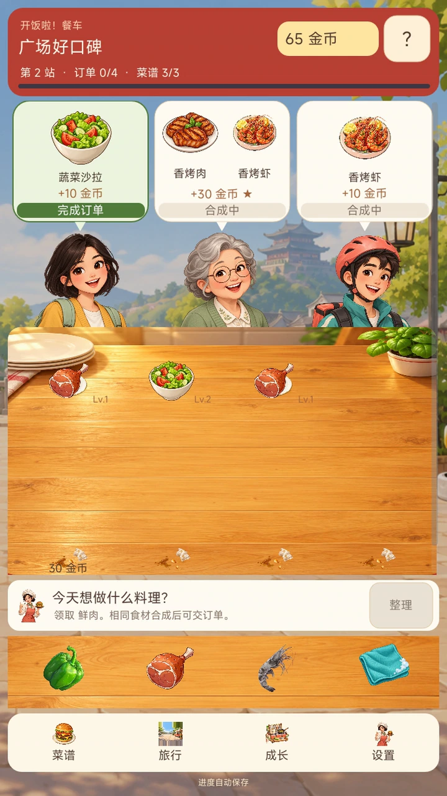
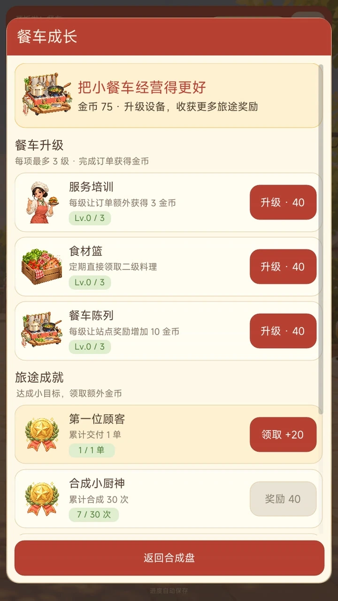
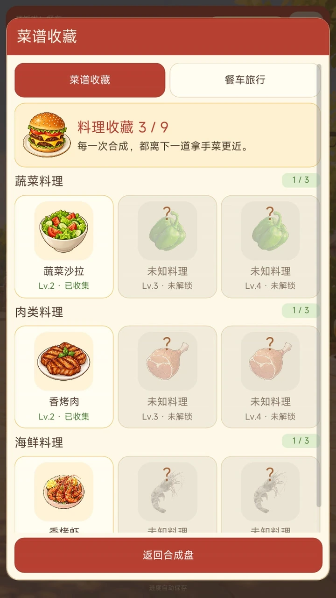
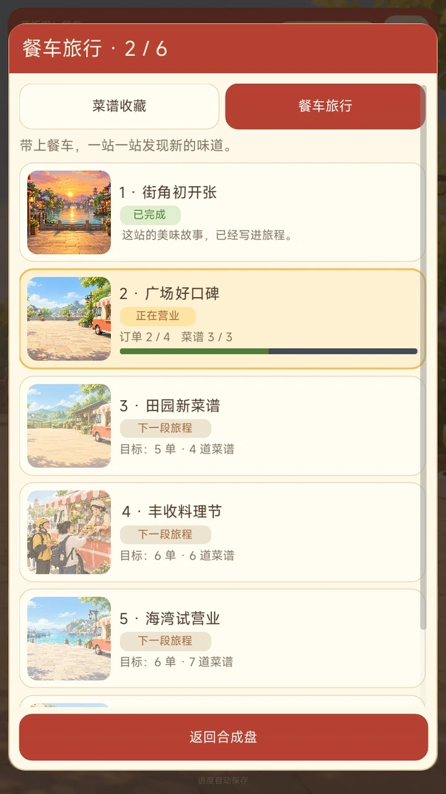

把棋盘藏进餐桌
我把合成格藏在连续的木桌里，食材和料理直接摆在桌面。用 AI 辅助制作半身顾客和木纹资产，在引擎里用桌沿遮住顾客下身，把订单气泡放到对应人物上方。
TAPTAP MAKER / 个人 AI 游戏实践
合成料理 / 轻经营 / 旅行收集
我用 AI 协作把合成棋盘做成能摆菜的餐桌。玩家看顾客头顶的订单配餐，用收入升级餐车，沿六个美食站点继续旅行。

竖屏开发实录 · AI 美术与交互
GAMEPLAY / 核心体验
免费领取蔬菜、肉类与海鲜，移动、交换或合成食材，再按订单交付。第二站开始加入双料理订单；服务培训、食材篮和餐车陈列各有三级成长。餐桌可从12格扩至16格，六站通关后可继续自由经营。
TAPTAP GALLERY / 游戏展示图
四张画面来自竖屏开发版的 Windows 引擎采集，完整保留订单、食材和操作区。
点击任意图片可查看大图。




这两张是接入游戏的 AI 辅助美术。立绘留出透明背景，木桌面把装饰道具放在边缘，给玩家操作留出空间。
DESIGN / 规则与取舍
我把合成格藏在连续的木桌里，食材和料理直接摆在桌面。用 AI 辅助制作半身顾客和木纹资产，在引擎里用桌沿遮住顾客下身，把订单气泡放到对应人物上方。
餐桌从 12 格扩展到 16 格，通过抹布擦除污渍逐步开放位置。整理操作支持立即撤销，让腾挪食材保留试错空间。
第二站开始，顾客可能一次点两道菜。订单把菜名、图标和奖励放在一起；后续窄屏布局让两道菜上下排，保留大图并允许菜名换行。
三类升级各有三级，菜谱收藏、旅行进度和四项成就分别记录短期与长期目标。成长页面把升级成本、当前效果与下一步放在一起，支持玩家安排收入。
MY PRACTICE / 项目推进
我定下合成、交餐、升级、旅行的循环和竖屏阅读顺序，再用 AI 生成并修订主宣传图、顾客立绘和木桌面，用 Codex 协助实现 TapTap Maker 的订单界面、合成反馈和多尺寸布局。通过 Windows 引擎演示检查了从领料、交单到第二站扩容的操作流程。